カウンター強化が止まらない!!新SP「ジュード・ベリンガム」のピックアップSP選手スカウトは引くべき？新SP選手4名を徹底評価

2026年7月7日更新のピックアップSP選手スカウトでは、ジュード・ベリンガム、ヨシュコ・グヴァルディオル、アレハンドロ・バルデ、ダンテの新SP選手4名が登場しました。今回の主役は、初期総合力7188で全SP選手393人中1位に立つジュード・ベリンガム。カウンターAMの最強候補であり、金フォーメーションコンボ「エウスカルドゥナク'12」の発動キーにもなれる超注目選手です。ただし、ガチャ全体としては「日本代表SP選手スカウト」との優先順位を冷静に比べたい内容でもあります。
結論：ベリンガムは最強級。ただしガチャ全体は「目的がある人向け」
今回のガチャは、ベリンガムを本気で狙うかどうかで評価が大きく変わります。ベリンガム単体の性能は文句なしで、カウンターAM、アタッカーⅢ、初期総合力、スキル、特徴、フォメコン対応のすべてが高水準。純粋な性能だけで見れば、現環境トップクラスどころか「最強SP選手」と言ってもいいレベルです。
ただし、プレイスタイル「アタッカーⅢ」目的なら、今後恒常化予定のアントワーヌ・グリーズマンでも代用可能。さらにカウンター編成そのものを広く強化したいなら、7月20日まで開催中の日本代表SP選手スカウトの方が、排出率や選手相性の面で優先しやすいです。
つまり今回のおすすめ判断は明確です。「エウスカルドゥナク'12をSP選手で発動したい」「最強AMのベリンガムを確保したい」なら引く価値あり。一方で、カウンター以外の強化やGB/RB温存を重視するなら、無理に深追いしなくても良いガチャです。
ガシャの注目ポイント
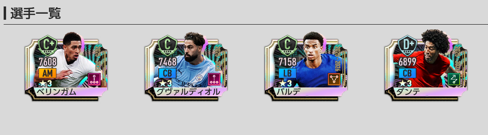
- ★3の排出率は5%。
- 排出される★3選手は2026年5月15日までに登場した選手のみ。スコット・マクトミネイなども対象。
- RB1回限定★3確定10連はピックアップ確定ではなく、新SP4名を含む全60種の★3SPの排出確率が同じ。
- 新SP選手がピックアップ確率で引けるのは「通常」タブのガチャのみ。
- 開催期間終了後、本ピックアップ対象選手はSP選手スカウトに追加予定。
- 開催期間終了後「ピックアップSP選手スカウトメダル」は、1枚につき「SP選手スカウトメダル」1枚に変換。
RB1回限定★3確定10連は「ベリンガム確定」ではない
一番注意したいのは、RB1回限定の★3確定10連です。★3が1人確定する点は魅力ですが、ベリンガムやグヴァルディオルなどの新SP4名が確定するガチャではありません。確定枠では、新SP4名を含む全60種の★3SP選手が同じ確率で並ぶため、ベリンガム1点狙いには向きません。
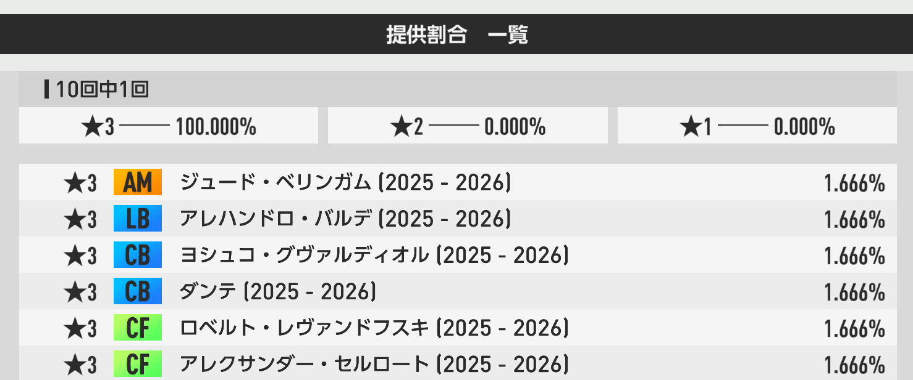
新SP選手をピックアップ確率で狙うなら、基本的には通常タブのガチャを確認してから引くのが安全です。RB確定枠は「★3選手の母数を増やしたい人向け」、通常タブは「新SP4名を狙いたい人向け」と考えると判断しやすいです。
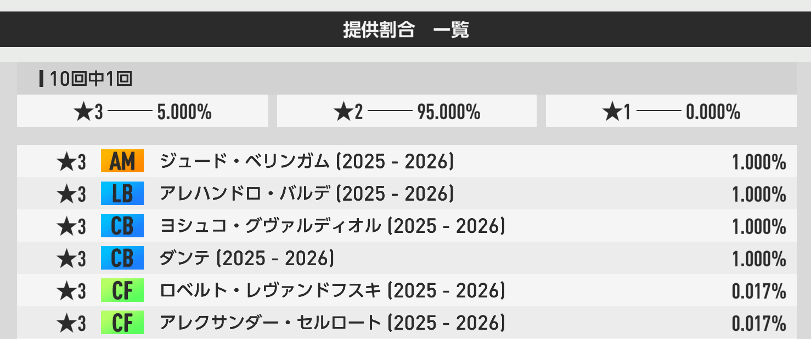
おすすめ度Tier表
全SP選手393人中1位の初期総合力を持つ今回の大本命。カウンターAM、アタッカーⅢ、金特徴「砕氷船」、ロングキャノン、エウスカルドゥナク'12対応と、性能面ではほぼ隙なし。
カウンターCBでは現状最強クラス。グヴァルディオル目的だけで深追いするかは手持ち次第ですが、ディアボロ・ディ・ミラノ'99のキー選手としても価値があります。
上位互換はいるものの、ムービングCBの補強枠としては優秀。ネラッズーロ'10などCB2枚布陣を使うなら、現状入手可能な選択肢として評価できます。
ポゼッションLBでは強いものの、現状は金フォメコンの明確なキーではなく補強枠。代用候補が育っている場合は優先度が下がります。
新SP選手4名の性能評価
P0390
ジュード・ベリンガム
スペック
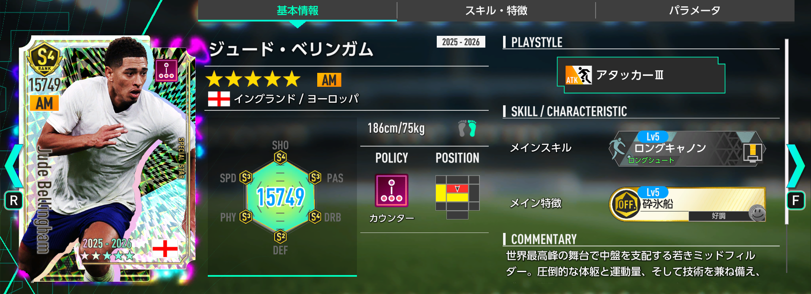
ステータス
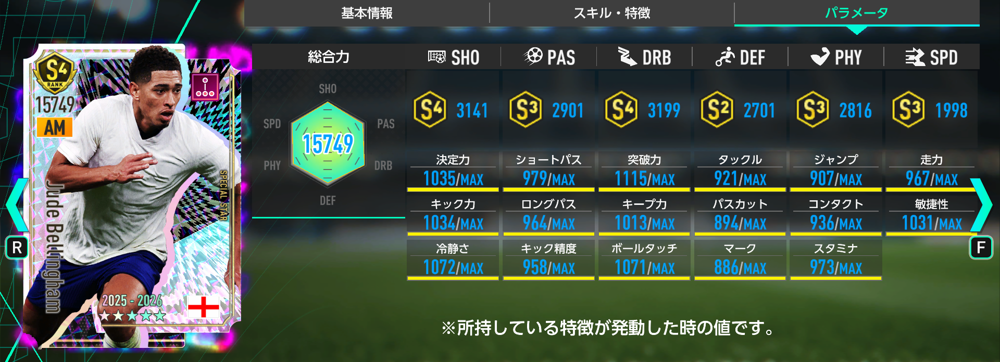
スキル・特徴
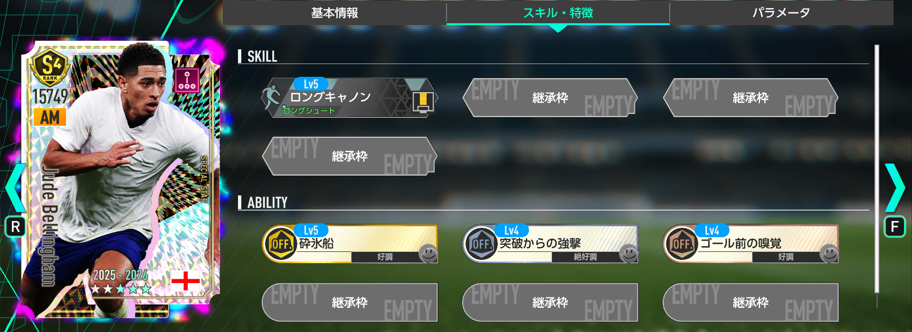
ベリンガムは、初期総合力が全SP選手393人中1位、カウンター119人中1位、AM51人中1位、アタッカー33人中1位。数字だけで見ても、現環境の頂点に立つ選手です。プレイスタイル「アタッカーⅢ」はアントワーヌ・グリーズマンに続く2人目で、希少性も十分あります。
最大の強みは、金フォーメーションコンボ「エウスカルドゥナク'12」の発動条件キーとして使える点。さらに金特徴「砕氷船」はSP選手では初実装で、好調トリガーとして非常に強力。所持スキル「ロングキャノン」もAMとの相性が良く、中盤から得点を狙えるロマンと実用性を両立しています。
一方で、アタッカーⅢ目的ならリアクションAMのグリーズマンで代用できる可能性があり、カウンター全体を強化したいだけなら日本代表SP選手スカウトの優先度も高いです。とはいえ、ベリンガム単体の性能は文句なし。エウスカルドゥナク'12を組みたい人、最強AMを確保したい人にとっては今回の明確な大当たりです。
P0391
ヨシュコ・グヴァルディオル
スペック
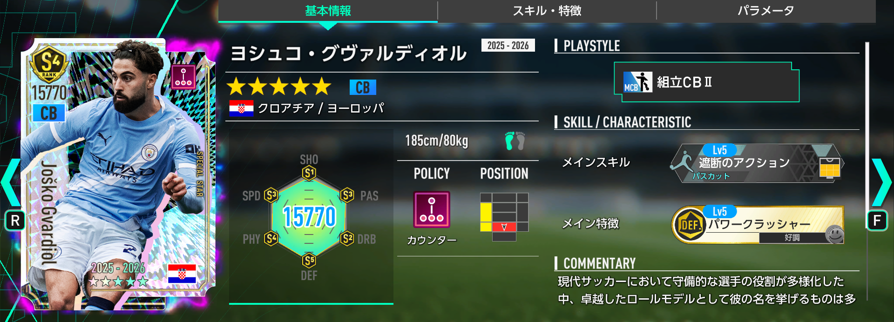
ステータス
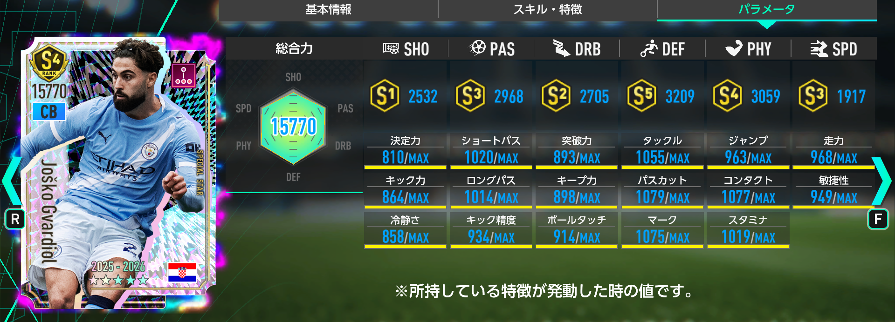
スキル・特徴
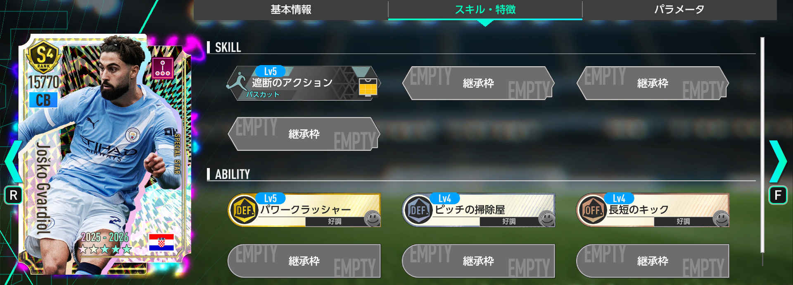
グヴァルディオルは、初期総合力が全SP選手393人中6位、カウンター119人中2位、CB58人中1位、組立CB20人中1位。カウンターCBとしては現状最強クラスで、日本代表SPの谷口彰悟や恒常SPのウィリアム・サリバを上回る性能です。
金フォーメーションコンボ「ディアボロ・ディ・ミラノ'99」の発動条件キーとして採用できる点も大きな魅力。さらに金特徴「パワークラッシャー」はSP選手では初実装で、好調トリガーとしての価値も高いです。カウンターCBを一気に更新したい人にとっては、かなり強い補強になります。
ただし、カウンターCBは代用候補が比較的多いポジションでもあります。すでにサリバの限界突破が進んでいる、または日本代表SP選手スカウトで谷口彰悟を確保している場合、グヴァルディオルの優先度は少し下がります。最強CBが欲しいなら狙う価値あり、手持ちが揃っているなら無理に深追いしなくても良い選手です。
P0392
アレハンドロ・バルデ
スペック
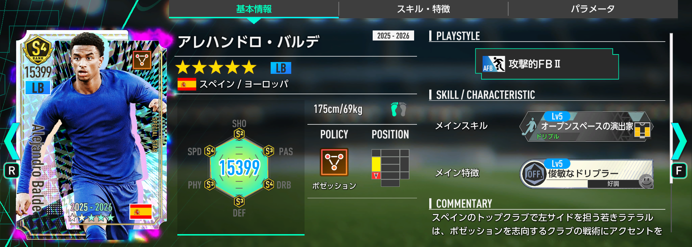
ステータス
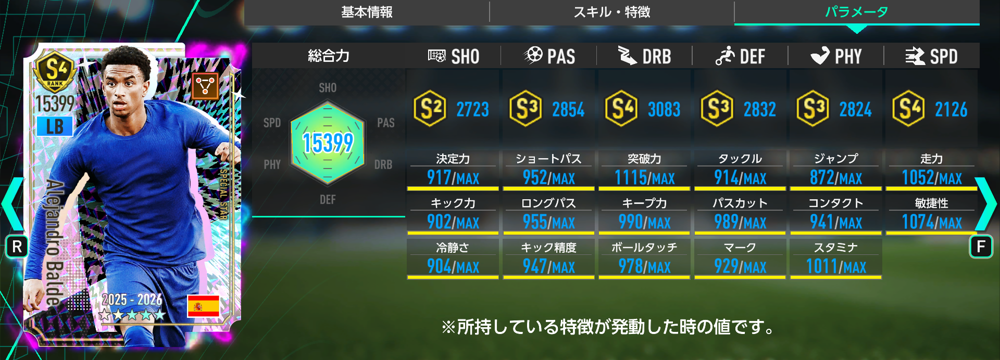
スキル・特徴
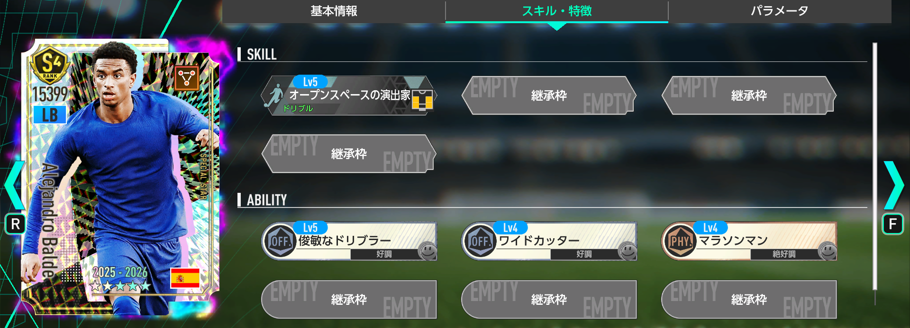
バルデは、初期総合力が全SP選手393人中37位、ポゼッション95人中9位、LB21人中1位、攻撃的FB24人中2位。ポゼッションLBとしては現状最強のSP選手で、左サイドバックを強化したい場合は十分候補になります。
所持スキル「オープンスペースの演出家」はSP選手では初実装で、ドリブルスキルとして攻撃的な活躍に期待できます。攻撃的FBらしく、守るだけではなく前に出てチャンスを作るタイプのLBです。
ただし、現状ではポゼッションLB攻撃的FBⅡが発動条件になる金フォーメーションコンボがなく、基本的には補強枠としての獲得になります。恒常SPのユリエン・ティンバーや恒常★2SPのペルビス・エストゥピニャンで代用できる場合も多く、今回のガチャでバルデ目的に深追いする優先度は低めです。
P0393
ダンテ
スペック
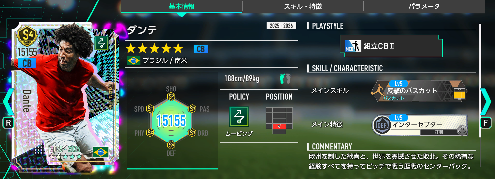
ステータス
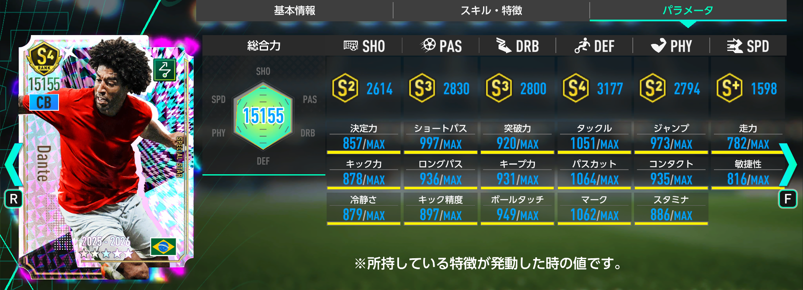
スキル・特徴
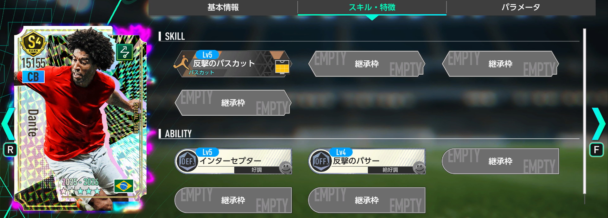
ダンテは、初期総合力が全SP選手393人中70位、ムービング88人中16位、CB58人中9位、組立CB20人中5位。数字だけ見ると今回の4名では控えめですが、ムービングCBの★3SP選手としては十分優秀です。
性能面では、マンチェスターシティガチャのナタン・アケや恒常★3SPのフィルジル・ファン・ダイクの下位互換という立ち位置。ただし、ナタン・アケは現状入手不可で、ファン・ダイクを未所持なら、現実的なムービングCB補強としてダンテを起用する価値はあります。
さらに金フォーメーションコンボ「アルビセレステ'01」の発動条件キーとして採用可能。ネラッズーロ'10のようなCB2枚布陣を使う場合、現状入手可能なSP選手ではファン・ダイクとダンテの2バックが有力候補になります。目玉ではないものの、使い道がまったくない選手ではありません。
今回のガチャを引くべき人・見送るべき人
引くべき人
- ジュード・ベリンガムを最優先で確保したい人。
- カウンターAMの最強候補を更新したい人。
- 金フォメコン「エウスカルドゥナク'12」をSP選手で発動したい人。
- グヴァルディオルでカウンターCBを最強クラスに更新したい人。
- GB/RBに余裕があり、恒常追加を待たずに即戦力化したい人。
見送るべき人
- カウンター編成全体を広く強化したい人。
- 日本代表SP選手スカウトをまだ十分に引けていない人。
- グリーズマン、サリバ、谷口彰悟などの代用候補が育っている人。
- ポゼッション、ムービング、リアクションの強化を優先したい人。
- ピックアップ対象が恒常追加されるまで待てる人。
まとめ：ベリンガムは超大当たり。ただし「ガチャ全体の優先度」は冷静に判断
ジュード・ベリンガムは、現環境のSP選手の中でも明らかにトップクラスです。全SP選手393人中1位の初期総合力、カウンターAM最強、アタッカーⅢ、金特徴「砕氷船」、ロングキャノン、エウスカルドゥナク'12対応と、目玉選手としての説得力は十分すぎます。
ただし、今回のガチャはベリンガム以外の3名に明確な優先順位の差があります。グヴァルディオルは強いものの代用候補あり、バルデは補強枠、ダンテは特定編成向け。さらにピックアップ対象選手は開催期間終了後にSP選手スカウトへ追加予定なので、今すぐ必要かどうかを考える価値があります。
結論としては、ベリンガムを引ければ勝ちのガチャです。ただし、カウンター編成全体を強くしたいなら日本代表SP選手スカウト優先、GB/RBを温存したいなら恒常追加待ちも十分あり。自分の編成に「ベリンガムが必要か」を基準に判断しましょう。